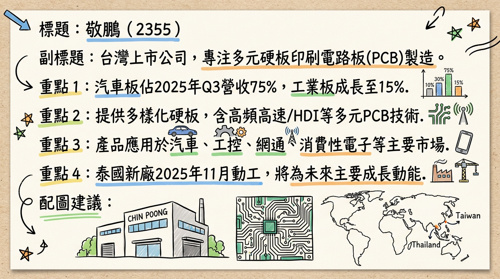
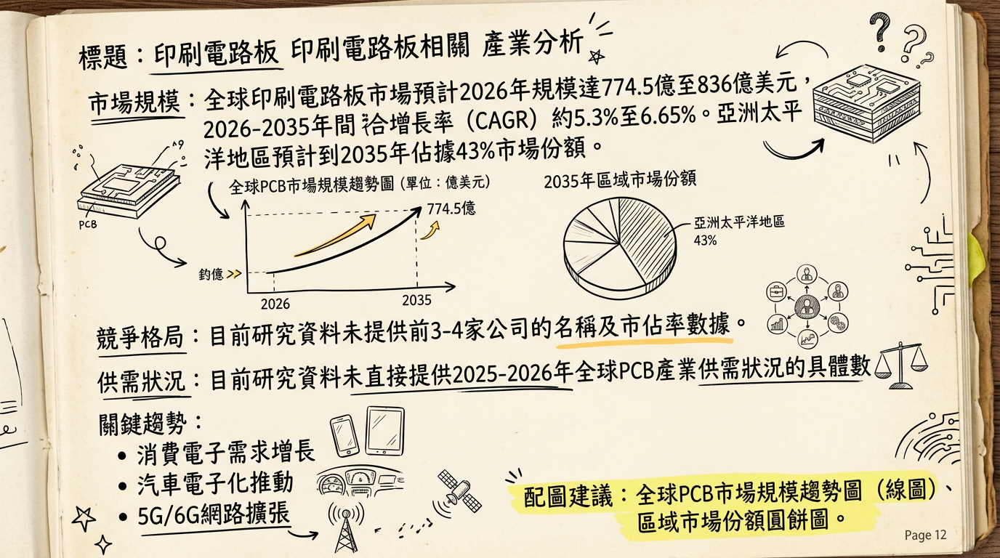
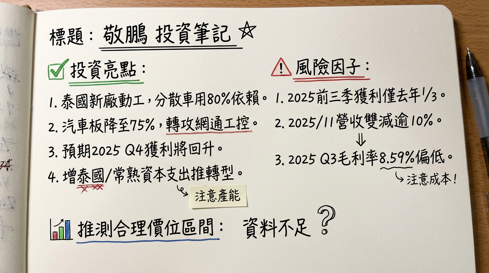

2355 敬鵬 深度研究報告
一句話摘要
敬鵬 (2355) 作為全球第四大車用PCB製造商，儘管2025年第三季營運觸底，但正積極調整產品組合，將重心轉向工業電子、網通及低軌衛星等高成長領域。隨著泰國新舊廠產能陸續開出，配合新市場訂單，預期2026年營運有望迎來轉機。
公司概覽
敬鵬工業 (2355) 是一家台灣上市公司，主要業務為印刷電路板 (PCB) 製造，提供多樣化的硬板產品，被市場譽為「電路板的百貨公司」。
核心產品/服務：
敬鵬的核心產品涵蓋高頻高速板、多層板、金屬基板、厚銅板、撓折板、HDI板、單/雙面板及銀(銅)膠貫孔板等。這些產品廣泛應用於汽車電子、工業控制、通訊設備與消費性電子領域。
營收結構（2025年1月至9月統計）：
| 產品線 | 營收佔比 | 備註 |
|---|
| 汽車板 | 75% | 較2024年的約80%下降，產品組合調整中。 |
| 工業用板 | 15% | 較2024年的8%提升，積極拓展中。 |
| 網通 | 6% | |
| 消費性電子應用 | 4% | |
| 基地 | 產能佔比 | 主要發展方向 |
|---|
| 台灣 | 53% | 專注於生產更高附加價值的利基型產品。 |
| 中國常熟 | 36% | 投入工業與網通相關產線。 |
| 泰國 | 11% | 重要性持續提升，舊廠改造完成，新廠已於2025年11月動工。 |
核心競爭優勢
車用PCB領導地位： 敬鵬是全球第四大車用印刷電路板製造商，客戶涵蓋全球前20大汽車零組件廠商中的三分之二，最終產品應用於Tesla、比亞迪、Toyota、福斯汽車等國際大廠，受益於電動車與ADAS趨勢。
多元產品組合與技術深度： 提供涵蓋多種板材與技術的產品，有能力滿足客戶在高頻高速、多層板、HDI等方面的需求，被譽為「電路板的百貨公司」。
供應鏈韌性佈局： 積極擴建泰國生產基地以因應全球供應鏈變化及客戶「台灣+1」策略，降低地緣政治風險。
積極轉型與新興市場拓展： 策略性地將資源轉向工業電子、網通及低軌衛星等新興高成長領域，並已取得「AS 9100航太品質管理體系」認證，成功切入低軌衛星供應鏈並出貨。
財務分析
月營收趨勢（近6個月）
| 月份 | 金額 (新台幣億元) | 月增率 MoM | 年增率 YoY |
|---|
| 2026年02月 | 尚未公告 | - | - |
| 2026年01月 | 14.14 | +6.77% | +14.49% |
| 2025年12月 | 13.25 | +6.6% | +7.68% |
| 2025年11月 | 12.43 | -10.75% | -10.17% |
| 2025年10月 | 13.92 | +7.4% | -0.99% |
| 2025年09月 | 12.96 | +0.13% | -5.57% |
- 季營收：38.58 億元
- 毛利率：8.59%
- 營業利益率：-0.15%
- EPS：0.19 元
註：2025年第三季營運曾陷入谷底，本業出現虧損。
全年度營收與 EPS (2024實際 + 2025實際/預估)：
* 全年EPS：2.85 元
* 全年營收：約 157.53 億元 (累計2025年1月至12月營收，較去年同期衰退3.68%)
* 預估EPS：法人機構平均預估介於 1.06 元至 2.24 元之間，其中Readmo.ai 預估 1.23 元，CMoney 預估 1.06 元至 1.4 元之間。
* 法人機構平均預估年度稅後純益約 5 億元，預估EPS介於 1.06 元至 1.4 元之間 (CMoney, 2026年2月10日)。
法說會重點 (2025年12月16日)
- 營運回顧： 2025年前三季獲利僅為2024年同期的三分之一，主要受歐美車市需求疲軟及匯率影響。
- 產品組合調整： 積極調整產品組合，將汽車板佔比從2024年的約80%降至2025年1-9月的75%，並加大力度佈局工業電子與網通（含低軌衛星）領域。工業電子產品營收佔比已從2024年的8%提升至2025年第三季的14%。
- 市場展望： 管理層表示，汽車客戶對2026年車市看法保守，公司策略將不再等待車市復甦，而是全力衝刺工業電子與網通等新興領域，汽車業務則以維持穩定為主。
- 產能擴建與資本支出：
* 泰國新廠已於2025年11月動工，預計工期超過1.5年，將成為未來主要的成長動能。新廠將布局通訊與工業電子相關應用。
* 公司將透過增加資本支出，擴建泰國與中國常熟廠區產能，以應對市場變化及地緣政治需求。2025年規劃資本支出達10億元水準，主要投資於泰國生產線，優於2024年的6.7億元。
- 財務預期： 預期2025年第四季獲利能力在內部營運改善及有利匯率因素下有望回升。預期2026年營運可望好轉，受益於SpaceX擴大釋單以及低軌衛星產業進入量產交付階段。
券商觀點
以下為市場上對敬鵬的券商觀點整理：
| 券商名稱 | 目標價 (新台幣) | 評等 | 日期 |
|---|
| 某券商 | 45 | 看多 | 不詳 (報告提及2025年營收與EPS預估) |
| 英為財情 Investing.com | 45 | - | 12個月平均目標價 |
財報深度分析
利潤率趨勢 (近5季)
| 季度 | 毛利率 | 營業利益率 | 稅後淨利率 |
|---|
| 2024年Q1 | 8.32% | -1.91% | -0.28% |
| 2024年Q2 | 8.78% | -0.21% | -0.16% |
| 2024年Q3 | 9.92% | 0.32% | 0.22% |
| 2024年Q4 | 10.37% | 0.77% | 0.65% |
| 2025年Q3 | 8.59% | -0.15% | 1.92% |
敬鵬在2024年呈現逐季改善的利潤率趨勢，毛利率、營業利益率和稅後淨利率均從Q1的低點逐步回升並轉正。然而，2025年第三季的毛利率和營業利益率再次承壓，顯示營運在該季度陷入谷底，但淨利率因業外收入而有所提升。
存貨與營運效率趨勢 (近4季)
| 季度 | 存貨金額 (新台幣億元) | 存貨週轉天數 (天) | 應收帳款週轉天數 (天) |
|---|
| 2024年Q1 | 54.12 | 140.23 | 81.38 |
| 2024年Q2 | 55.48 | 139.79 | 80.25 |
| 2024年Q3 | 55.03 | 135.25 | 77.01 |
| 2024年Q4 | 53.68 | 129.53 | 74.05 |
2024年存貨金額在Q2略升後逐步下降，而存貨週轉天數和應收帳款週轉天數均呈現逐季下降趨勢，顯示公司在2024年營運效率有所改善，存貨去化速度加快，應收帳款回收效率提升。目前並未顯示有異常的存貨堆積現象。
資本支出與負債比率：
- 資本支出： 2024年實際資本支出為新台幣6.75億元。2025年規劃資本支出達10億元水準，主要投資於泰國生產線。
- 負債比率 (2024年Q1-Q4)： 維持在53.18%至53.94%之間，財務結構相對穩定。
股權異動
- 董監事/大股東申報轉讓： 截至目前未找到2025-2026年董監事/大股東申報轉讓紀錄。
- 庫藏股買回： 截至目前未找到2025-2026年庫藏股買回紀錄。
- 可轉換公司債 (CB)： 截至目前未找到2025-2026年發行可轉換公司債（CB）及轉換價格的最新資訊。
- 增減資計畫： 截至目前未找到2025-2026年現金增資或減資計畫。
- 股利政策： 敬鵬於2026年2月27日公告，2024年度（民國113年）現金股利為1.85元。
產業分析
全球PCB市場規模與成長率：
全球印刷電路板（PCB）市場規模預計在2025年約為 741.2億美元至802億美元，並在2026年達到約 774.5億美元至836億美元。預計在2026年至2035年間，市場的複合年增長率（CAGR）約為 5.3%至6.65%。
供需狀況：
目前未有明確數據指出2025-2026年全球PCB產業是供過於求或供不應求。然而，市場普遍因應汽車電子化、5G/AI/IoT等技術發展對高效能PCB的需求增長，製造商正加大投資以滿足市場需求，間接表明高階PCB市場仍有強勁需求。
競爭格局：全球前十大PCB供應商 (⚠️過時，2021-2022年資料)
| 排名 | 公司名稱 | 總部所在地 |
|---|
| 1 | Zhen Ding Technology Group (臻鼎科技) | 台灣 |
| 2 | Unimicron Technology Corp. (欣興電子) | 台灣 |
| 3 | Nippon Mektron | 日本 |
| 4 | Samsung Electro-Mechanics | 韓國 |
| 5 | LG Innotek | 韓國 |
| 6 | AT&S | 奧地利 |
| 7 | TTM Technologies | 美國 |
| 8 | Tripod Technology Corp. (健鼎科技) | 台灣 |
| 9 | Compeq Manufacturing (華通電腦) | 台灣 |
| 10 | Shinko Electric Industries | 日本 |
* 趨勢： 電子產品小型化、功能整合推升HDI與高層數多層板需求。高多層PCB市場預計2025年達 114.1億美元，2026年成長至 118.6億美元，CAGR 4.44%。
* 敬鵬影響： 敬鵬需持續投入精密製造與材料技術研發，以滿足高頻、高速、低損耗要求，有機會透過其多層板技術基礎切入更高階應用。
汽車電子化與電動車 (EV) 發展：
* 趨勢： 電動車與ADAS普及大幅增加車載電子元件，EV所需PCB是傳統燃油車的 3至5倍。全球汽車PCB市場預計到2026年達 128億美元，CAGR 7.2%。
* 敬鵬影響： 敬鵬作為汽車板龍頭，將直接受益於此趨勢，高可靠度、高耐用性汽車PCB的需求是其核心優勢及成長動能。
5G/6G、AI與物聯網 (IoT) 擴展：
* 趨勢： 5G/6G基礎設施、AI與IoT裝置對高頻高速、高集成度、散熱佳PCB需求。AI伺服器PCB市場預計2026年將超過 120億美元。高頻通信PCB正以 25% 增長率發展。
* 敬鵬影響： 公司積極拓展網通及工業電子（含低軌衛星）領域，符合此趨勢。透過開發先進材料和精密製程，有望抓住新機遇。
對敬鵬而言的具體機會與威脅：
*
汽車板市場深耕： 受益於全球電動車和ADAS強勁成長，核心業務有望持續擴大市場份額。
* 拓展新市場： 積極轉型工業用板、網通及低軌衛星，分散風險並開拓新成長動能。
* 泰國生產基地： 在地緣政治考量下，泰國廠可吸引更多國際客戶訂單。
*
產業競爭激烈： 面對全球強大競爭對手，需持續投入研發。
* 原材料成本波動與匯率風險： 影響毛利率。
* 技術快速迭代： 需持續高額研發投入以跟上產業進步。
* 全球經濟景氣： 終端電子產品需求受經濟影響大。
相關投資題材：
- 電動車 (EV) / ADAS： 核心業務汽車板直接相關，受益於BMS、逆變器、ADAS控制器等需求。
- AI (人工智慧) / 伺服器： AI算力需求帶動高階PCB需求，敬鵬的多層板技術有潛力切入。
- 網通設備： 5G/6G基礎設施和數據中心需求，敬鵬積極佈局網通應用將受益。
- 低軌衛星 (LEO Satellite)： 已切入供應鏈並出貨，有望受惠於SpaceX擴大釋單。
近期催化劑
- 2025年11月： 泰國新廠動工，預計工期超過1.5年，規劃貢獻年營收新台幣40億元。
- 2025年12月11日： 公告2025年11月營收新台幣12.43億元，月減10.75%，年減10.17%。
- 2025年12月16日： 法人說明會，強調轉型工業電子與網通（含低軌衛星），預期2025年第四季獲利回升，2026年營運好轉。2025年前三季累計EPS 0.96元。
- 2026年1月10日： 公告2025年12月營收新台幣13.25億元，月增6.6%，年增7.68%。
- 2026年2月10日： 公告2026年1月營收新台幣14.14億元，月增6.77%，年增14.49%，創2025年5月以來新高。法人預估2026年EPS介於1.06元至1.4元。
- 2026年2月20日： 新聞報導指出，敬鵬2025年第三季營運雖谷底，但受惠泰國廠整修與新廠動工、低軌衛星量產交付，預期2026年營運有望好轉。
- 2026年2月26日： 公告董事會將於2026年3月10日召開，報告2025年第四季合併財務報告。
- 2026年2月27日： 公告2024年度現金股利為1.85元。
- 2026年3月4日： 三大法人合計買超5,275張，其中外資買超5,110張，顯示法人對其後市看法轉趨樂觀。
⭐ 成長動能時間軸
*
泰國舊廠： 已於2025年上半年完成整修升級，並陸續導入新設備，新產能正逐步開出。
* 泰國新廠： 於2025年11月動工，預計工期超過1.5年 (預計2027年上半年或更晚投產)。規劃此廠在產能滿載情況下可貢獻年營收新台幣40億元。
* 大陸常熟廠： 預計將進行設備更新，投入工業與網通相關產線。
*
新應用市場： 公司積極佈局工業電子與網通（含低軌衛星）領域，以分散汽車板風險。
* 新客戶： 低軌衛星產品已通過兩家客戶認證，並已開始出貨。
* 工業電子： 2025年Q3工業電子產品營收佔比已從2024年的8%提升至14%，顯示新市場拓展見效。
*
目的： 透過增加資本支出推動公司轉型，承接低軌衛星及工業電子等利基型產品訂單。
* 金額與時程： 2025年Q3資本支出顯著提升至7億元。2025年規劃總資本支出達10億元水準 (優於2024年的6.7億元)。
* 泰國舊廠新產能逐步開出，泰國新廠動工後，預計在2027年上半年或更晚將有顯著的產能增加。目前泰國廠佔總體產能比重約11% (2025年Q3)，未來預計大幅拉升。
*
低軌衛星： 低軌衛星產業已進入量產交付階段，受惠於SpaceX擴大釋單，相關PCB需求持續成長。
* 工業電子： 因AI自動化生產推進，工業電子需求提升。
* 汽車板： 儘管2026年車市看法保守，但長期而言，電動車電子化及自動駕駛普及將持續增加每輛車對PCB與HDI板的使用量和規格要求。
2026 展望
成長動能：
新興領域成長： 公司策略性轉型至工業電子、網通及低軌衛星，這些新興領域預計在2026年將有顯著成長，尤其低軌衛星已進入量產交付階段，網通產品佔比有望挑戰10%以上。
泰國新舊廠效益： 泰國舊廠整修完成並陸續投產，新廠動工建設，將為2026年及未來幾年貢獻新增產能和營收。
產品組合優化： 減少對波動較大的傳統汽車市場依賴，轉向高附加價值與高成長產品，有助於提升長期獲利能力。
風險：
全球汽車市場疲軟： 歐美日汽車客戶對2026年車市看法保守，汽車板佔比仍高達75%（2025年1-9月），短期內仍將是主要營收來源，影響公司整體營收成長。
獲利能力波動： 2025年第三季毛利率和營業利益率承壓，顯示轉型初期仍面臨挑戰，需觀察後續季報能否持續改善。
匯率與成本壓力： 逾九成營收美元計價，但生產成本受人民幣和泰銖影響，匯率波動和原材料、電費成本上漲可能持續壓縮毛利率。
新產能開出時間： 泰國新廠工期長，短期內產能貢獻有限，主要效益預計在2027年後顯現。
地緣政治與關稅風險： 雖積極佈局泰國，但全球貿易政策變化仍可能帶來不確定性。
投資結論
敬鵬 (2355) 儘管在2025年經歷營運低谷，但其核心優勢、積極轉型策略及新產能佈局，為2026年帶來明確的成長契機。
深耕汽車板，掌握長期趨勢： 敬鵬作為車用PCB領導廠商，將長期受益於電動車與ADAS普及帶動的汽車電子化趨勢，尤其對高可靠度、高耐用性PCB的需求將持續成長。
多角化轉型，開拓新成長曲線： 公司從汽車板向工業電子、網通和低軌衛星領域的策略轉型，符合產業高成長趨勢。低軌衛星業務已成功切入並出貨，工業電子營收佔比顯著提升，為公司開闢新的成長動能。
泰國擴廠，增強全球供應鏈競爭力： 泰國新廠的動工與舊廠升級，不僅能滿足客戶分散供應鏈的需求，也為公司未來幾年的產能擴張和營收增長奠定基礎，長期效益值得期待。
營運谷底已過，關注2026年復甦： 2025年第三季已是獲利谷底，隨著泰國舊廠產能逐步開出、新市場訂單成長，以及市場對低軌衛星的高度期待，管理層預期2026年營運將好轉，月營收數據已見回溫跡象。
建議投資區間： 考量敬鵬在汽車板的穩固地位、積極轉型帶來的長期成長潛力，以及法人對2026年EPS約1.06元至1.4元的預估，並參考券商目標價45元，我們建議投資人可關注 新台幣42元至48元 的目標價區間。此區間反映了市場對其轉型成果的期待以及未來新產能的貢獻。投資人應密切關注2025年第四季財報及2026年營運表現，以驗證轉型成效。
本報告由 AI 自動產生，資料來源為公開網路資訊，僅供參考，不構成投資建議。產生時間：2026-03-06 00:22
📊 資訊卡


